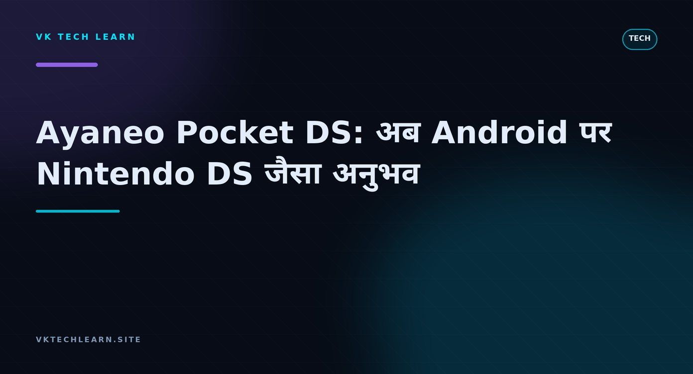

Ayaneo Pocket DS: अब Android पर Nintendo DS जैसा अनुभव
Ayaneo Pocket DS: Android पर Nintendo DS जैसा अनुभव
दो स्क्रीन, Android 13, Snapdragon G3x Gen 2. Indiegogo पर प्री-ऑर्डर उपलब्ध।
मुख्य बातें
- Ayaneo Pocket DS दो स्क्रीन वाला हैंडहेल्ड है जो Android 13 पर चलता है।
- ऊपर 7-इंच 1080p OLED और नीचे 5-इंच 1024×768 LCD।
- Snapdragon G3x Gen 2 प्रोसेसर। 8GB/128GB से शुरू। microSD सपोर्ट।
- Indiegogo पर प्री-ऑर्डर। सूची कीमत 519 डॉलर। शुरुआती ऑफर 399 डॉलर तक।
- कंपनी का लक्ष्य शिपिंग अक्टूबर 2025 से।
OS
Android 13
डिस्प्ले
7" 1080p OLED + 5" 1024×768 LCD
चिपसेट
Snapdragon G3x Gen 2
बैटरी
8000 mAh
स्पेक्स
| मेमोरी / स्टोरेज | 8GB RAM + 128GB (बेस), 16GB RAM + 1TB (हाई मॉडल), microSD सपोर्ट |
|---|---|
| कंट्रोल्स | TMR एंटी-ड्रिफ्ट जॉयस्टिक, Hall-effect ट्रिगर (समायोज्य), जाइरो |
| कनेक्टिविटी | Wi-Fi, Bluetooth, पावर बटन में फिंगरप्रिंट सेंसर |
| रंग विकल्प | YellowBlackRetro Gray (Limited) |
कंपनी ने बैटरी बैकअप का समय साझा नहीं किया है। जरूरत होने पर दूसरी स्क्रीन बंद कर बैटरी बचत की जा सकती है।

कीमत और उपलब्धता
- Indiegogo पर प्री-ऑर्डर चालू है।
- शुरुआती कीमत 519 डॉलर। अर्ली बैकर के लिए 399 डॉलर से।
- 16GB/1TB मॉडल 759 डॉलर। अर्ली बैकर पर 639 डॉलर।
- शिपिंग का लक्ष्य अक्टूबर 2025।
किसके लिए सही
- जो यूज़र DS-स्टाइल डुअल-स्क्रीन अनुभव चाहते हैं।
- Android पर एम्यूलेशन और मोबाइल गेम खेलते हैं।
- सेकेंड स्क्रीन को मैप, कंट्रोल या यूटिलिटी के लिए उपयोग करना पसंद करते हैं।